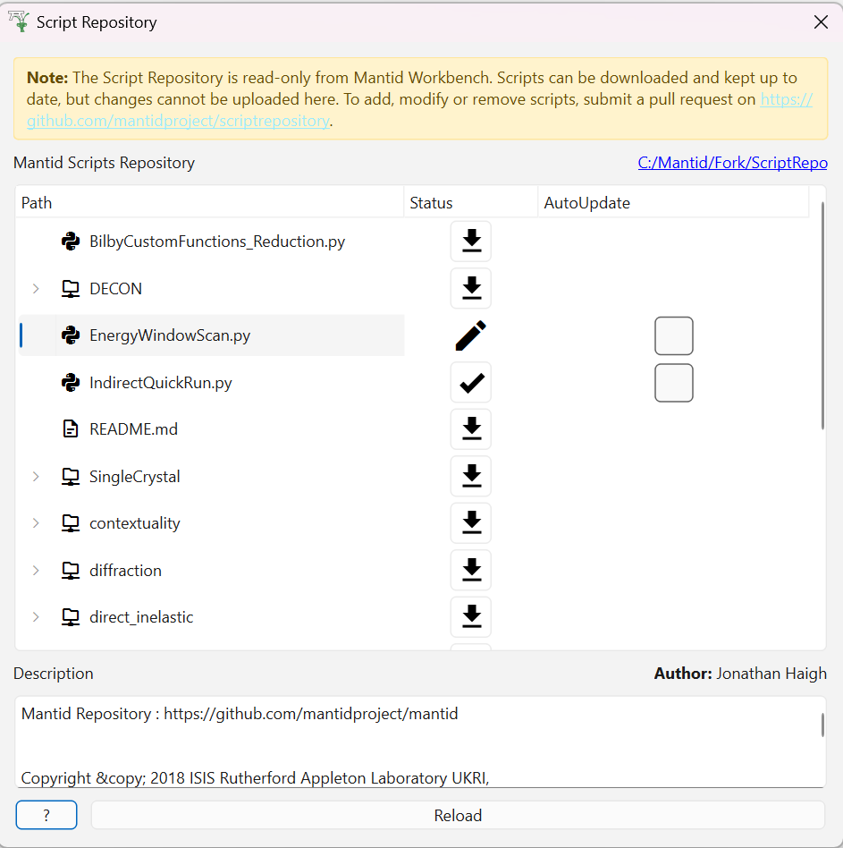

Script Repository#
The script repository is a sharing tool for downloading and uploading of Mantid Scripts and Reduction Algorithms.
Its a user and scientific community repository for their scripts.
It allows downloading and uploading scripts.
Installation#
Installing the Script Repository is simple:
Under the
Filemenu selectScript Repositoryentry and clickOKSelect the installation directory. Note: it is recommended to use an empty folder to avoid conflicts with other files
Features#
{kind=link}

The files and directories within the script repository are presented in tabular form with the location of the installation on disk presented in the top right. The columns shown are:
Path: The file or directory name. Directories are marked with a
>and can be expanded to reveal the contents of subdirectories.Status: An icon that defines the state of the object:
⤓ indicates the file/directory exists in the repository but has not been downloaded locally. Click the icon to download the item. Directories also download all child items.
✓ indicates the file/directory has been downloaded to the local machine and the contents match those in the repository.
⤒ indicates changes have been made locally that can be uploaded to the repository. Click the icon to upload.
AutoUpdate: A checkbox appears next to those items that have been downloaded. Checking this box causes the file to be updated with contents from the repository when Workbench is restarted.
Delete: An icon appears next to those items that have been downloaded. Clicking this removes the item locally and from the repository (a confirmation dialog appears first).
If a file item is highlighted in the table, the contents of the file will be displayed in the box marked Description.
Clicking the Reload button refreshes the state of the files both locally and on the repository itself. The status column will be updated.
Moving the Install Location#
If you wish to move the install location of the repository you will need to update the Mantid configuration to understand the new location. In the IPython console run the following commands:
config['ScriptLocalRepository'] = 'NEW-PATH-GOES-HERE'
# persist for future sessions
config.saveConfig(config.getUserFilename())
Under the Hood#
The interface presented here is simply a facade over a Git repository stored at mantidproject/scriptrepository. The full change history can be seen here and any normal git operations will work with this repository.